March 2026
Principal Research Scientist · London
Ismail Elezi, Ph.D.
Hi, I'm Ismail. I am a Principal Research Scientist at Huawei Noah's Ark in London, working with Jiankang Deng, where I am leading one of the multi-modality learning teams.
After finishing my bachelor studies at the University of Prishtina, Kosovo, I obtained both my master's and Ph.D. degree at Ca' Foscari University of Venice, Italy, advised by professors Marcello Pelillo and Thilo Stadelmann. Then, I worked as a postdoctoral researcher with professor Laura Leal-Taixé at Technical University of Munich and interned with Jose M. Alvarez at NVIDIA, Santa Clara.
After finishing my bachelor studies at the University of Prishtina, Kosovo, I obtained both my master's and Ph.D. degree at Ca' Foscari University of Venice, Italy, advised by professors Marcello Pelillo and Thilo Stadelmann. Then, I worked as a postdoctoral researcher with professor Laura Leal-Taixé at Technical University of Munich and interned with Jose M. Alvarez at NVIDIA, Santa Clara.
Internship note. If you have a first author paper in a top ML/CV conference, and want to do an internship with me, please send me an email (find it in my CV). My interns/mentees usually author papers with me and go on to great companies or PhD programs.
News
Recent papers, service, and personal research updates.
March 2026
One paper accepted to ICML 2026. Congratulations to Tatiana for MIDSteer. See you in beautiful Seoul!
March 2026
One paper accepted to CVPR 2026. Congratulations to Yura for HINT.
February 2026
Two papers accepted to ICLR 2026. Congratulations to Tatiana for CASteer and to the NLP team for DeepSynth. .
November 2025
One paper accepted to AAAI 2026. Congratulations to the team for ViCToR.
July 2025
Two papers accepted to ICCV 2025. Congratulations to the team for Semanticist and RICE (highlight)! Aloha Hawaii.
April 2025
Got chosen as Area Chair for NeurIPS 2025. First time I am doing this for a top-tier conference. #grownUp
February 2025
Got a paper accepted to CVPR 2025. Congratulations to Kostas.
January 2025
Finally got a paper accepted to ICLR. Congratulations to my former intern Prannay and see you in Singapore
September 2024
One paper accepted to NeurIPS 2024. Congratulations to Roy for VeLoRA. See you in Vancouver.
February 2024
November 2023
One paper got accepted to AAAI 2024. Congratulations to Chencheng!
April 2023
Started a new position as a Senior Research Scientist at Huawei Noah's Ark lab, working with Jiankang Deng. Very excited for the new work and for moving to London!
February 2023
One paper got accepted to CVPR 2023. Congratulations to Jenny!
September 2022
Two papers accepted to NeurIPS 2022. Congratulations to Vlad and Peter. Happy to be back to the US after covid.
Selected publications
Search by title, author, venue, or year. Publication cards keep the original links and thumbnails.
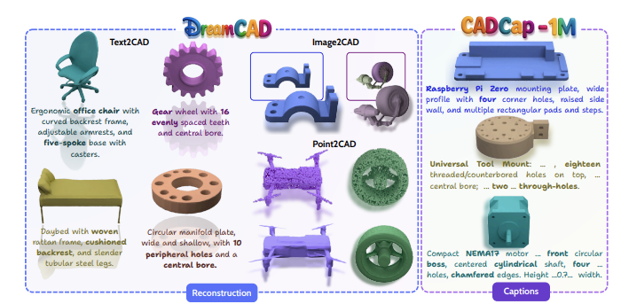
M. Khan, M. Usama, R. Potamios, D. Stricker, M. Azfal J. Deng, I. Elezi: : DreamCAD:Scaling Multi-modal CAD Generation using Differentiable Parametric Surfaces , European Conference on Computer Vision (ECCV), 2026. paper
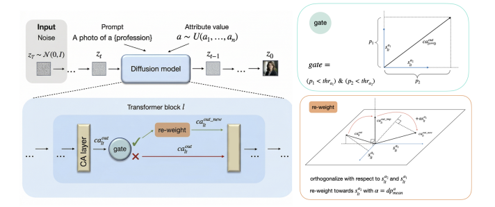
T. Gaintseva, A. Achara, G. Slabaugh, J. Deng, I. Elezi: : EquiSteer: Cross-Attention Steering Towards a Fairer Text-Guided Image Generatione , European Conference on Computer Vision (ECCV), 2026. paper

T. Gaintseva, A. Stepanov, Z. Liu, M. Benning, G. Slabaugh, J. Deng, I. Elezi: MIDSTEER: Optimal Affine Framework for Steering Generative Models , International Conference on Machine Learning (ICML), 2026. paper
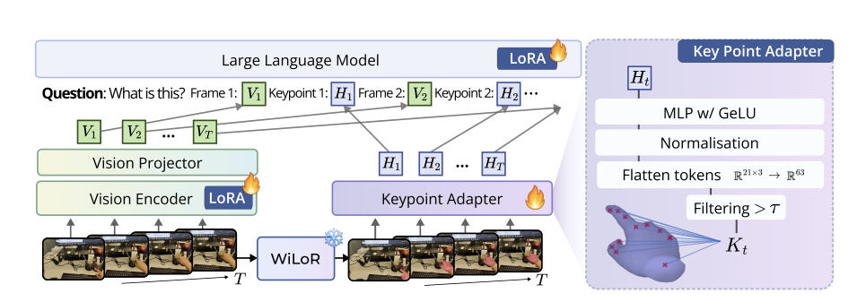
Y. Choi, R. Miles, R. Potamias, I. Elezi, J. Deng, S. Zafeiriou, Gesture-Based Egocentric Video Question Answering , Conference on Computer Vision and Pattern Recognition (CVLR), 2026. paper
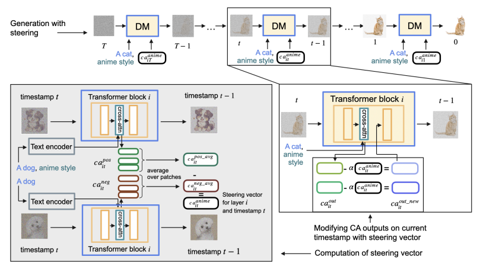
T. Gaintseva, A. Oncescu, C. Ma, Z. Liu, M. Benning, G. Slabaugh, J. Deng, I. Elezi: : CASteer: Cross-Attention Steering for Controllable Concept Erasure , International Conference on Learning Representations (ICLR), 2026.
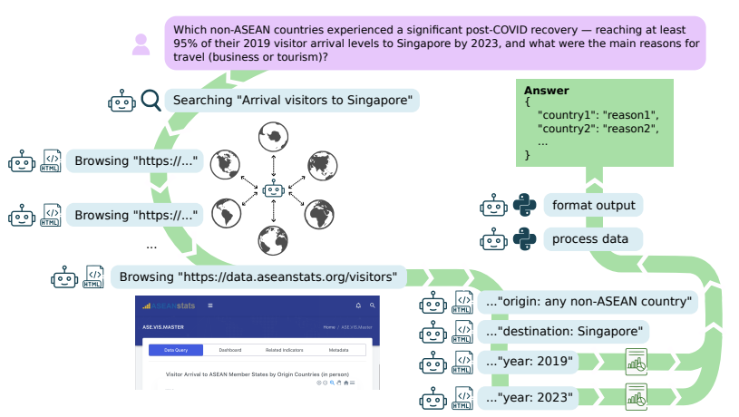
D. Paul, D. Murphy, M. Gritta, R. Cardenas, V. Prokhorov, L. Bolliger, A. Toker, R. Miles, A. Oncescu, J. Sivakumar, P. Borchert, I. Elezi, M. Zhang, K. Lee, G. Zhang, G. Lampouras, and J. Wan: : A Benchmark for Deep Information Synthesis , International Conference on Learning Representations (ICLR), 2026. paper
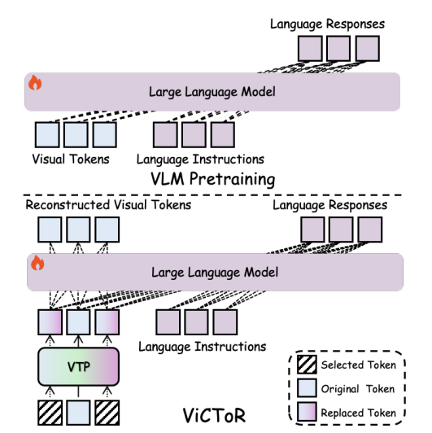
Y. Xie, K. Yang, P.Liang, X. An, Y.Zhao, Y. Wang, Z. Feng, R. Miles, I. Elezi, J. Deng: : ViCToR: Improving Visual Comprehension via Token Reconstruction for Pretraining LMMs , Conference on Artificial Intelligence (AAAI), 2026. paper
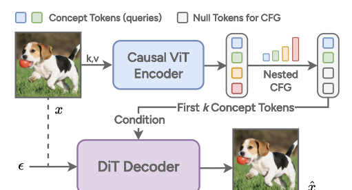
X. Wen, B. Zhao, I. Elezi, J. Deng, X. Qi : “Principal Components” Enable A New Language of Images , International Conference on Computer Vision (ICCV), 2025. paper
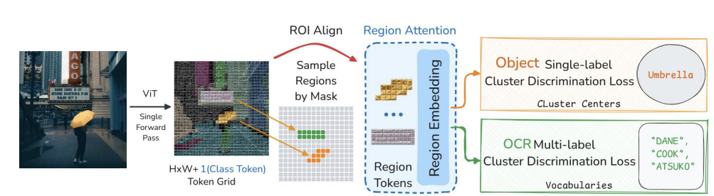
Y. Xie, K. Yang, X. An, K. Wu, Y. Zhao, W. Deng, Z. Ran, Y. Wang, Z. Feng, R. Miles, I. Elezi, J. Deng: Region-based Cluster Discrimination for Visual Representation Learning , International Conference on Computer Vision (ICCV), 2025. paper
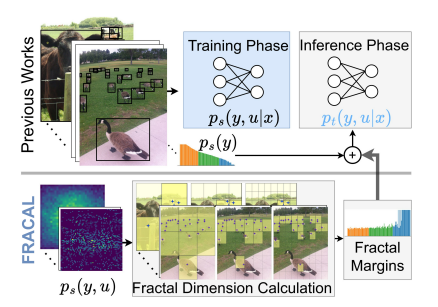
K. Alexandridis, I. Elezi, J. Deng, A. Nguyen, S. Luo: Fractal Calibration for long-tailed object detection, Conference on Computer Vision and Pattern Recognition (CVPR), 2025. paper
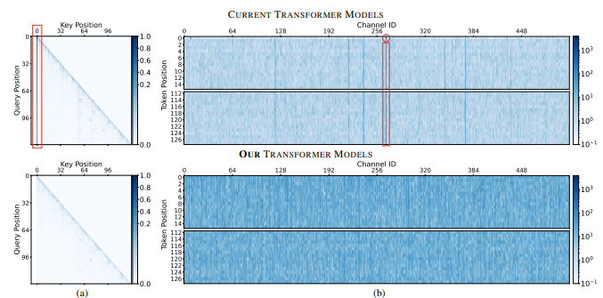
P. Kaul, C. Ma, I. Elezi, J. Deng: From Attention to Activation: Unraveling the Enigmas of Large Language Models, International Conference on Learning Representations (ICLR), 2025. paper
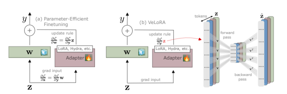
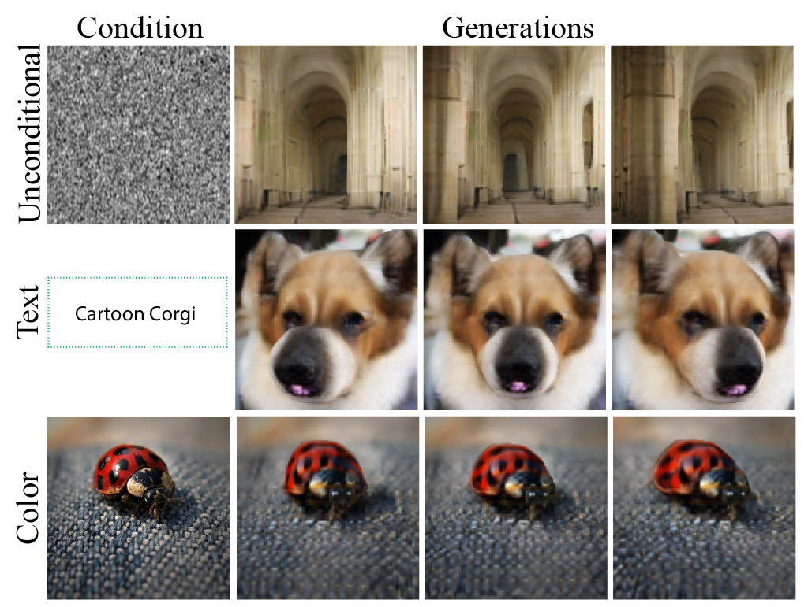
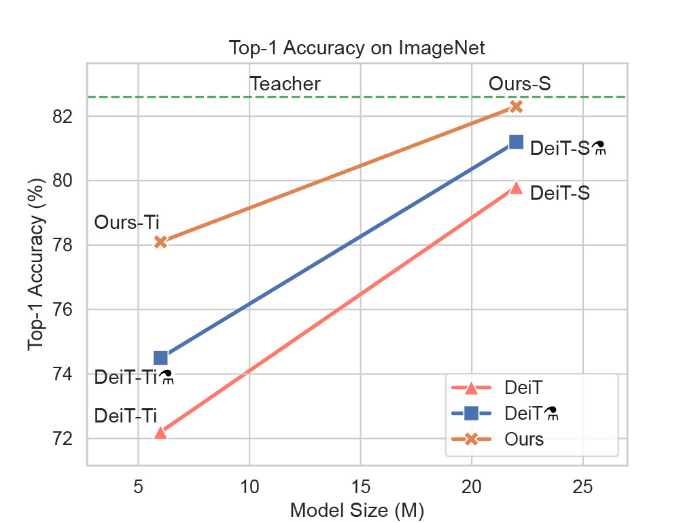
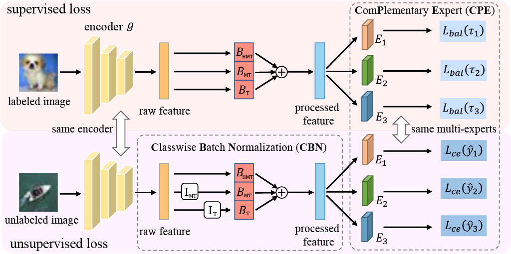
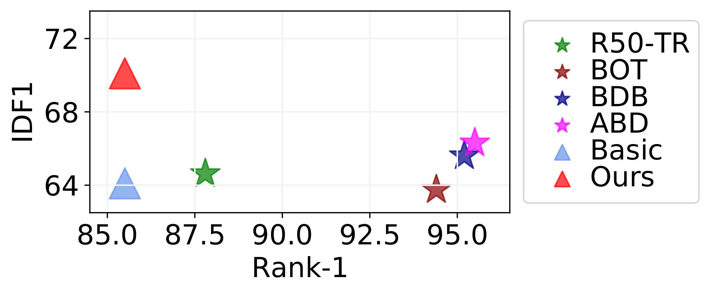
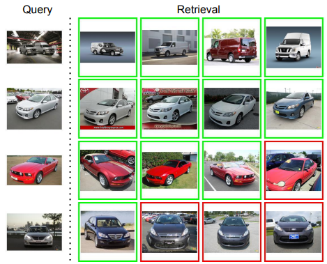
I. Elezi*, J. Seidenschwarz*, L. Wagner*, S. Vascon, A. Torcinovich, M. Pelillo, L. Leal-Taixé: The group loss++: A deeper look into group loss for deep metric learning, Transactions on Pattern Analysis and Machine Intelligence (PAMI), 2023. paper
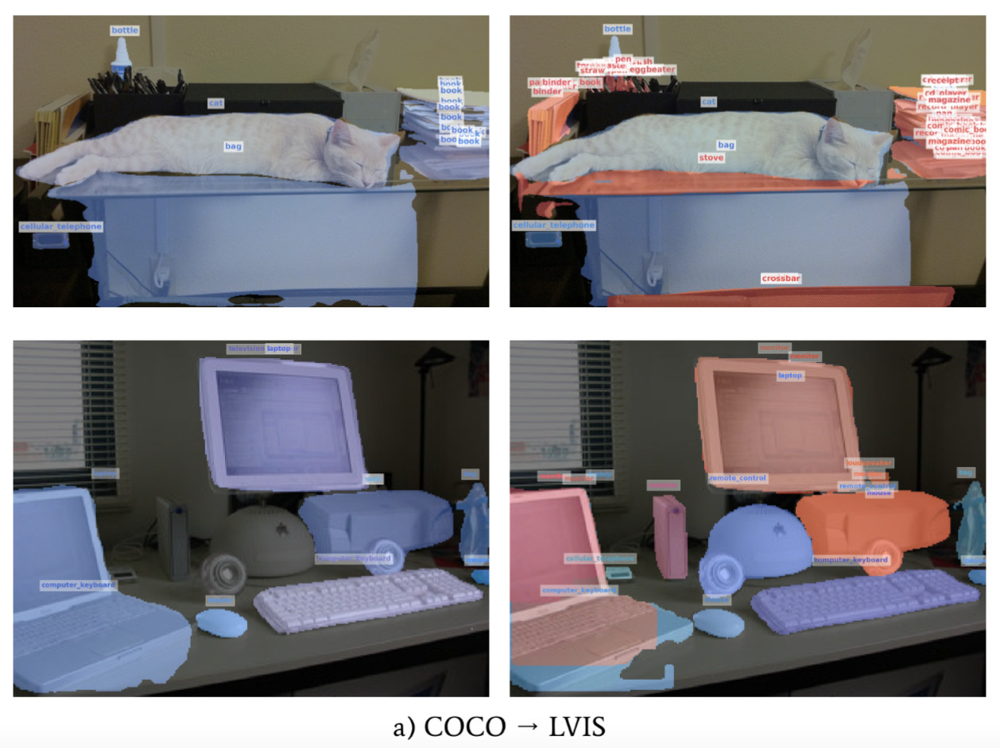
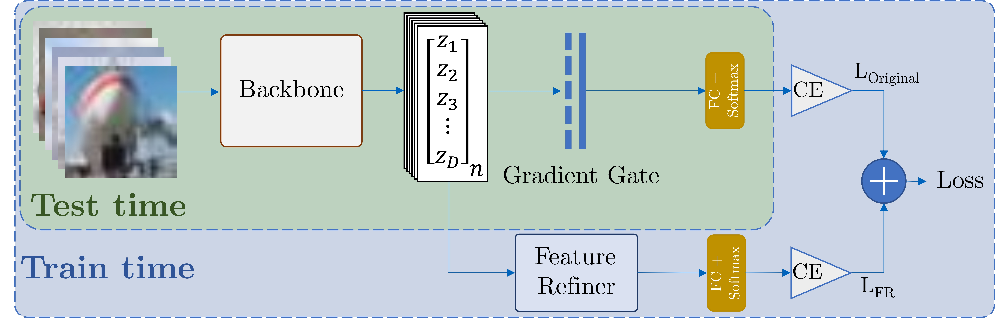
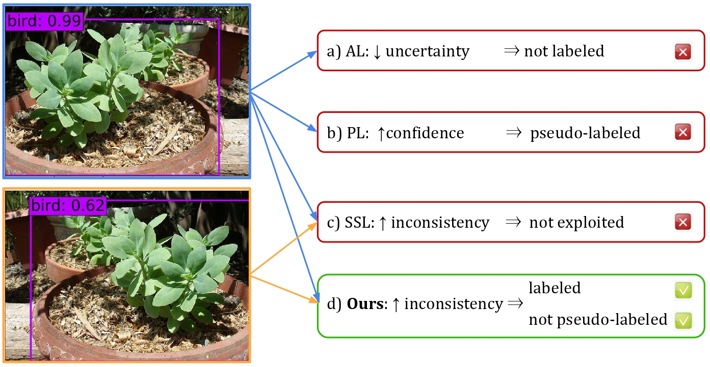
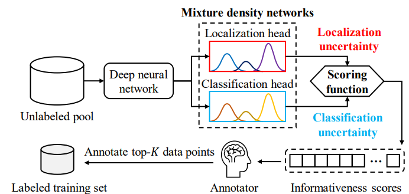
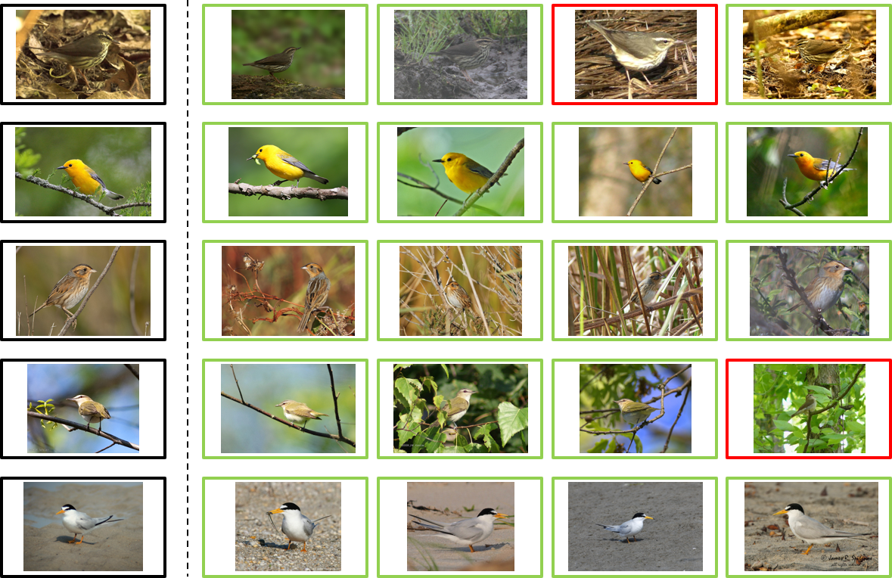
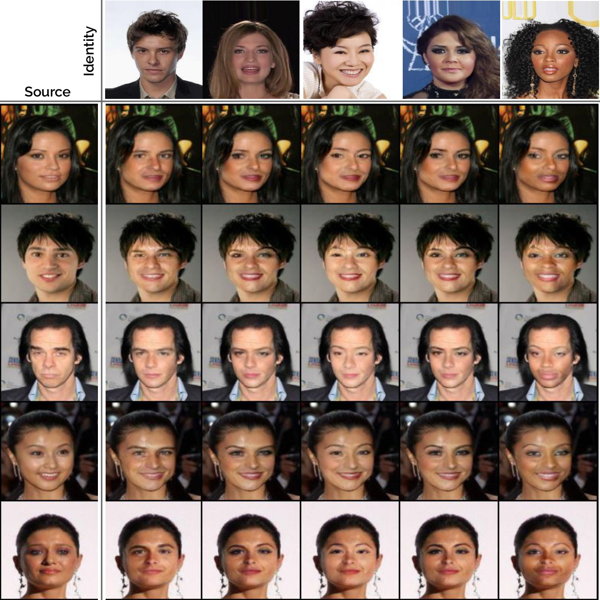
Students and interns
People supervised and mentored across internships, theses, and research projects.
- Tony Alex (University of Surrey, 2026)
- Ye Mao (Imperial College London, 2025)
- Mohammad Sadil Khan (University of Kaiserslautern, 2025)
- Yura Choi (Imperial College London, 2025)
- Ye-Bin Moon (POSTECH, 2025)
- Xin Wen (University of Hong Kong, 2024-2025)
- Aysim Toker (Technical Unversity of Munich, 2024-2025)
- Tatiana Gaintseva (Queen Mary University, 2024-2025)
- Bingchen Zhao (University of Edinburgh, 2024)
- Changrui Chen (Warvick University, 2024) → Research Scientist at Huawei
- Prannay Kaul (University of Oxford, VGG, 2024)→ Applied Scientist at Amazon
- Roy Miles (Imperial College London, 2023) → Research Scientist at Huawei
- Konstantinos Alexandridis (King's College London, 2023) → Research Scientist at Huawei
- Yunqi Miao (Warwick University, 2023) → Research Scientist at Huawei
- Chencheng Ma (Chinese Academy of Sciences, 2023) → Research Scientist at Kunlun
- Volodymyr Fomenko (Master thesis at TUM, 2022) → Technical Staff at OpenAI
- Jenny Seidenschwarz (Master thesis and Ph.D. student at TUM, 2020-2023) → Ph.D. student at TUM
- Franziska Gerken (Ph.D. student at TUM, 2020-2023) → Ph.D. student at TUM
- Peter Kocsis (Master thesis at TUM, 2022) → Ph.D. student at TUM
- Peter Sukenik (Guided Research at TUM, 2021) → Ph.D. student at IST Austriat
- Feliks Hibraj (Research Intern at TUM, 2021) → Computer vision software engineer at SNAP
- Laurin Wagner (Master thesis at TUM, 2020) → Machine learnign software engineer myReha
Service
Conference service, reviewing, awards, and community contributions.
- Area Chair (AC) for WACV 2021, NeurIPS 2025.
- Reviewer for top conferences and journals in Computer Vision and Machine Learning: CVPR, ECCV, ICCV, NeurIPS, ICML, ICLR, IJCV, TMLR, etc. I even managed to get outstanding reviewer awards in CVPR 2021 and ICCV 2021
- I co-organized Deep Visual Similarity and Metric Learning tutorial in CVPR 2022.
Teaching
Courses, lectures, and public teaching material.
Summer 2022
Lecturer for IN2375: Computer Vision III: Detection, Segmentation and Tracking (CV3DST) (TU Munich)
Summer 2022
Lecturer for IN2346: Introduction to Deep Learning (I2DL) (TU Munich)
Winter 2021
Lecturer for IIN2375: Computer Vision III: Detection, Segmentation and Tracking (CV3DST) (TU Munich)
Winter 2021: Lecturer for IN2389: Advanced Deep Learning for Computer vision (ADL4CV) (TU Munich)
2019-2023: Lecturer for Introduction to Deep Learning with PyTorch (Datacamp). Around 30K students took the course before it got retired in 2023.
I have a few lectures online in Transformers, Semi-Supervised Learning, and Active Learning. They are a couple of years old so relatively outdated.